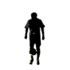

Estilos del Freestyle
El Freestyle se divide en los diferentes estilos:
- Lowerbody/Air Moves: Es el más popular en la nueva generación de Freestylers. El balón se mantiene elevado utilizando principalmente los pies y las piernas.

Ver Ejemplo de Lowerbody!
- Upperbody: Este estilo es la combinacion de "stalls" (paradas),donde se hacen trancisiones de estos. La mayoría de los toques se hacen con la cabeza, el pecho
y los hombros; pero también incluyen spins, movimientos np´s (no pause), y movimientos con los brazos.
Ver Ejemplo de upperbody!
- Sitting/Sit Down: Este estilo es el de realizar los toques al balon sentado. Todos los toques se ejecutan mientras se está sentado en el suelo con las piernas,cabeza,
etc. La incapacidad para mover el balón aumenta la dificultad de realizar cualquier movimiento en esta posición.
Ver Ejemplo de Sitting!
- Groundmoves: Se trata de movimientos normales de fútbol pero ejecutados sin ningún oponente. Los Groundmovers
pueden hacer que los movimientos de groundmoves parezcan una coreografía de baile, aquí se incluyen también los "akkas" (elasticos).
Ver Ejemplo de Groundmoves!